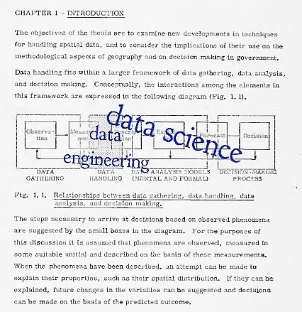

A follow on to: Why So many data scientists are leaving their jobs (TL;DR, only the entitled ones do)
Jonny Brooks-Bartlett's article, Why so many Data Scientists are leaving their jobs, inspired me to write this.
I agree wholeheartedly with Jonny's summation of expectations vs reality of the data science job. Furthermore, I believe folks are leaving because they idealistically think that the expectation should match the reality.
To preface this, I'd like to state that data science is booming and many are new to it. I come to this table having had over a decade of experience in Geographic Information Systems (GIS). Many lessons learned from my career apply here. From the get-go, as an undergrad research assistant in 2004, I had the pleasure of my first data project, where I needed to digitize 10's of 1000's of bicycle trip segments on a map from paper and digital field collected user-survey data, assign linear reference to them (m-values), store them in a database, then deliver them in a web browser to the end user, using a web mapping technology called ArcIMS. Ever since this first project, I've been in the business of delivering data over the web in one form or another, from paginated reports, dynamic charts, and (of course) slippy maps (like google maps). So that's my claim to tell you that I've been here for a little bit, and hopefully you'll take my opinions here seriously. I don't know it all, but I've been here long enough to know where things usually fall flat and don't succeed when it comes to a project that delivers data. But first and foremost, these are just my opinions based on my experience.
Our First Jobs introduce us to the broom
-Andrew Carnegie
Andrew Carnegie, who's wealth equated to 2.1% of the US GDP at his time, puts it best. Just because it's the sexiest job of the 21t century, doesn't mean you're entitled to the sexiest parts of the gig. Things are sloppy, awkward, unorganized, and disheveled-- you need practice to make it better (I'm talking data science btw). ;-)
Let's reference the 1974 thesis of Roger Tomlinson-- the late great geographer of our time. I went ahead and filled in modern buzzwords on his diagram.

I head up a data science SaaS product, and guess what? Data Scientist isn't a role on my internal team (but it is a role). Fundamentally, data gets gathered, then handled, THEN ANALYZED, THEN DECISIONS ARE MADE. You can't just swoop in on the analyzed or decisions being made part. Data science is a team sport and will require domain knowledge. Shame on anyone who takes a gig and assumes that it's their job to walk down the already paved road of data science pulling a cart full of insights to make any given company more profitable and competitive-- they need to have their head checked. There are a few industries where you can walk in, but outside of this, you're going to have to be realistic about the nature of the work.
The Team Sport
Let's break down the roles on my team. This is just an example, and not all roles have to necessarily be one person each:
Data Engineer: She's got a ton of SQL (language, not software) skills, she can move data from place to place. She builds a smart data pipeline. That means proper CRUD methods instead of lazy ETL. Going to the data, instead of forklifting the data over to you. Setting up even-driven triggers on changes in the data to further feed the pipeline. She builds performant views that ensure fast queries downstream that are made against the data. That means that algorithms and statistical packages as they relate to the domain of the data science problems need to be front-of-mind here. That means getting outside of one's comfort zone to learn about the "business" behind your existence. Only then, can she begin to apply the sexy bits of data science.
Front-end developer: For our product, Data science is delivered to the masses in a browser. So, this guy needs to understand working with JavaScript and HTML. Good chops in security and methods for dealing with multitenancy help as well.
DevOps Engineer: Servers, services, cloud technology, performance benchmarking, network architecture, patches, and security. She makes sure that the trains run on time. The devops engineer provides the canvas for everyone to paint on. Could be used interchangeably with IT, but just don't expect this person to be looking after your Outlook server. This person is seconded to the data science team.
Now here's where things get interesting. What tools / technology you use will dictate if you need this next role. If you use a self-service data tool like Qlik, Tableau, MicroStrategy, etc., you probably won't need this next role. HOWEVER, if you intend to do something truly original, you'll need this person.
Data Visualization Engineer: This guy is constantly talking to the end customer or product manager to determine what people need to see. How do tables need to be formatted? What kind of maps or charts, and visualizations need to be displayed in the browser? Then this person uses skills in D3.js, or other modern visualization libraries to deliver the last mile. He'll have to work closely with the data engineer and the front-end dev roles as well to ensure data integrity and security.
Team Leader / Product Manager: She's the glue that keeps the team together. Constant communication between team members, stakeholders, and end-clients is key here. To ensure that solutions that are delivered get used, and that there's a feedback loop of continuous improvement from the users back to the sprints that create the product features. She needs to have a shallow (that's OK) understanding of data science techniques and approaches. She's the coach on the team that'll be able to articulate complex topics between owner's box (executives & clients) and the players (the team).
The Domain is where the science happens
The End User is my "data scientist": This person delivers the last mile of data science (per Roger Tomlinson's thesis. This person might already be a scientist. In my case, it's environmental scientists and subject matter experts. They fill the roles of the data scientist here. They know what they need from the data already. They've had to deal with running statistics in Excel for years or they've fumbled through Access databases to try and get their jobs done. They don't need a multidisciplinary college-educated data scientist to swoop in and tell them how to do their jobs or tell them what to glean from their data, they just need a better way to deliver this. There are complex statistical packages in R that are academically tied to the domain that these folks are salivating to deliver in the browser, but they educate us on the applicability, not the other way around. This leads me a bold claim....
There are no "data scientists" on my payroll. Jonny's article speaks to a bigger problem in data science. The person who might identify with what he's talking about might be a "trained data scientist", who's been schooled in narrowly focused academic python/r exercises, tensorflow, hadoop, or (I hope not) an off-the-shelf drag-n-drop tools like tableau or Power BI. The data science that everyone romanticizes about with virally-awesome visualizations, machine learning, neural networks, and artificial intelligence is built on the blood, sweat, and tears of the un-sexy fundamental work of the aforementioned roles. You're not going to walk into a gig and deliver these things at scale unless an organization is ready and worthy. It's a team sport, and it's a tough curve to climb.
The most immediate applicable data science programs are domain-specific-- think bioinformatics, or quantitative finance. In many cases a different program will take your money, "make you a data scientist", and turn you into a shallow multi-disciplinary generalist-- people are jumping into this field and now there's masses of people armed with solutions who have very little interest in REALLY defining the problems embedded deep in a domain. Thus, that's why we're seeing many people ever-still in-search in this field. They believe they're entitled to the sexy bits, and they think it'll exist in an organization that's "ready to hire our first data scientist!". Most organizations are still climbing the unsexy curve of data management, data governance, and data quality. Sorry bud, you've come from the future, armed with your Coursera Jupyter notebook machine-learning chops: You need to cool it, and understand that to get to that point, you need to slog through the tough truths of what it takes to build a culture of data science. Start with the unsexy fundamentals (the broom), learn about the business of your business, be patient, and eventually, hopefully not alone, you'll create something amazing. If this bores you, then you probably just need to seek a job in academia/university, where you can get paid to simulate and research real-world problems with data science while the real-world catches up.